Elenco degli oggetti di Valheim
Dove si trova, in quale bioma e con quale strumento? Questo elenco comprende 864 oggetti – materiali, cibo, armi, armature e trofei. Per ogni oggetto vedi da dove proviene (alberi, giacimenti, creature, forzieri, mercanti), lo strumento necessario, la ricetta e a cosa serve. Tutti i dati sono letti direttamente dai file di gioco (versione 1.0.21).
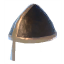
Armature, scudi e accessori148 oggettiNessun oggetto trovato.
Materiali
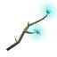
Cardo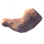
Carne di pollo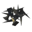
Chiodi di ferro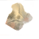
Chitina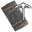
Colata: Balestra del nord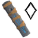
Colata: Bastone dei fulmini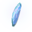
Cristallo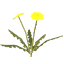
Dente di leone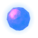
Essenza di Fuocoghiaccio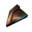
Frammento di rompisigilli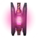
Nucleo scudo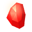
Rubino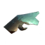
Scarti di rame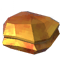
Tessuto pietrificatoCibo e pozioni
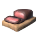
Carne di alce affumicata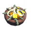
Insalata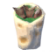
Involtini di pesce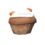
Pane dolce glassato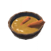
Zuppa di caroteArmi, strumenti e munizioni
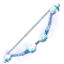
Arco di Fuocoghiaccio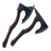
Ascia del berserkir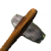
Ascia di selce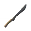
Coltello da macellaio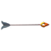
Freccia di Orosangue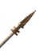
Lancia di bronzo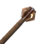
Mazza di bronzo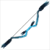
Zanna di tempestaArmature, scudi e accessori
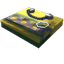
Abito giallo con perline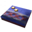
Abito semplice blu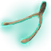
Forcula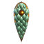
Scudo di scaglie di serpente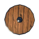
Scudo striato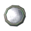
Spillone di ferro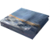
Tunica semplice blu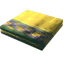
Tunica semplice gialla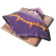
Vesti dell'EvocatoreTrofei
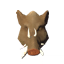
Trofeo di cinghialePesci e varie
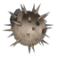
Pesce palla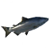
Tonno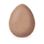
Uovo